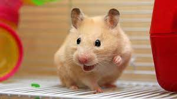
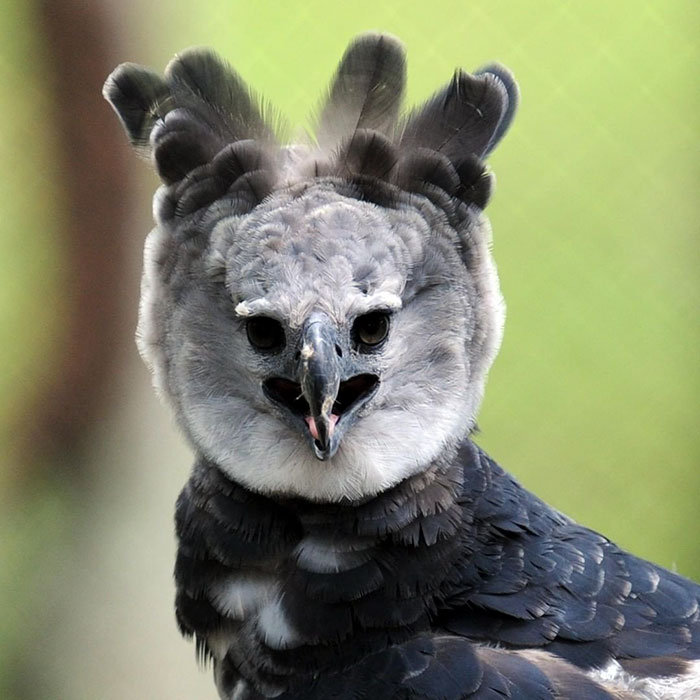

Hamster
Cricetinae
| Reino: | Animalia |
| Classe: | Mammalia |
Hamster[rémster] ou criceto é uma
designação comum a diversos pequenos mamíferos roedores, da subfamília Cricetinae,
encontrados na África e Ásia, dotados de grande bolsa facial e de cauda muito curta. É, também, o nome
vulgar de um roedor nativo da Síria (Mesocricetus auratus), encontrado no mundo todo como animal de
estimação ou como "cobaia".
A palavra inglesa hamster tem sua origem na palavra alemã
hamstern, que significa "acumular" ou "armazenar", numa referência às suas bochechas, que têm a
capacidade de acumular comida.
Possuindo grandes dentes incisivos que estão em constante crescimento, necessitam
estar sempre roendo para evitar que cresçam demais. O tempo de vida médio dos hamsters é de dois
anos sem acasalamento, contudo alguns podem viver até três ou quatro anos, dependendo da espécie. Existem
diferentes espécies de hamsters espalhados por todo o mundo e muitos deles habitam regiões
semidesertas onde vivem em tocas.
Estas tocas são formadas por vários túneis e câmaras que são utilizadas para
armazenar comida ou dormir. Os hamsters são animais noturnos, que dormem durante o dia quente e
ficam acordados à noite quando está mais frio. Eles veem muito mal, mas têm o olfato apurado e uma excelente
audição. Muitas espécies de hamsters têm as bochechas dilatáveis, isto é, bochechas que aumentam de
tamanho, onde eles podem carregar comida e forragem para ser guardada em sua toca.
Harpia
Harpia harpyja
| Reino: | Animalia |
| Classe: | Aves |
A harpia (Harpia harpyja), ou
gavião-real, gavião-de-penacho, uiruuetê,
uiraçu, uraçu, uiracuir, uiraquer,
cutucurim e uiraçu-verdadeiro, é a mais pesada e uma das maiores aves de
rapina do mundo, com envergadura de 2,5 metros e peso de até 12 quilos.
Ambos os sexos têm uma crista de penas largas que levantam quando ouvem algum ruído.
Como as corujas, elas têm um disco facial de penas menores que pode focar ondas sonoras para melhorar suas
capacidades auditivas. O uiraçú possui, como principais características físicas, olhos pequenos, um longo
topete, a crista com duas penas maiores e uma cauda com três faixas cinzentas, que pode medir até 2/3 do
comprimento da asa.
Esta ave da família Accipitridae possui asas largas e redondas, pernas curtas e
grossas, e dedos extremamente fortes, com enormes garras, capazes até de levantar um carneiro do chão. Sua
cabeça é cinza, o papo e a nuca, negros, e o peito, a barriga e a parte de dentro das asas, brancos. Tem
entre 50 a 90 centímetros de altura, uma envergadura de até 2,5 metros e um peso variando entre 4 e 5,5
quilogramas quando macho e entre 6 e 9 quilogramas quando fêmea.
É rápida e possante em suas investidas. É tão forte fisicamente que consegue erguer
um carneiro sem maiores dificuldades. Ela voa alternando rápidas batidas de asa com planeio. Tem um assobio
longo e estridente e, nas horas quentes do dia, costuma voar em círculos sobre florestas e campos próximos.
As harpias conservam energia se empoleirando silenciosamente, vendo e ouvindo por longos períodos de tempo.
Elas caçam com curtas e rápidas investidas. As fêmeas, maiores, caçam presas mais pesadas do que os menores,
mais ágeis e rápidos machos. Estas técnicas complementares podem aumentar as chances de sucesso na obtenção
de comida. Grandes presas, como preguiças e macacos, costumam ser consumidas parcialmente até poderem ser
transportadas para o ninho.